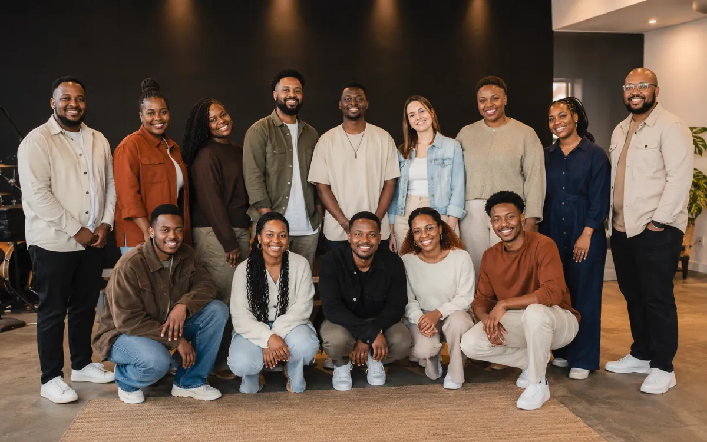

Worship Ministry
Kingship Worship
A team of vocalists, instrumentalists and creatives dedicated to Spirit-filled worship, musical excellence and helping people encounter God.
Our Worship Ministry
Building worshippers before building platforms.
Kingship Worship exists to lead people into God’s presence through worship, teaching and prophetic expressions. We are building a skilled, humble and unified team whose public ministry flows from a sincere private relationship with God.
Our worship culture values spiritual depth, preparation, discipline, creativity and excellence. Talent is welcomed, but character, teachability, consistency and devotion remain central to the team we are raising.
Meet the Worship Director
Thapelo [Surname]
Kingship Worship Director
Thapelo leads the worship ministry, coordinates vocalists and musicians, guides rehearsals and helps cultivate a worship culture rooted in unity, spiritual depth and excellence. This placeholder biography can be replaced with his full approved profile later.
“We are not only preparing songs. We are preparing hearts to serve God faithfully.”Join the team →
Featured Worship
Experience worship with Kingship.
This space is ready for the latest YouTube worship service, live session or worship-night recording. Replace the placeholder thumbnail and link when the first approved video is available.
Visit Our YouTubeWatch & Worship
Multiple video collections, one growing worship story.
Use these sections for Sunday worship, worship nights, choir performances, original music and behind-the-scenes moments.
Meet the Choir
The voices, musicians and creatives serving together.
All profiles below are editable placeholders until the final choir roster, photographs and biographies are confirmed.
How We Serve
Worship, development and creative ministry.
Worship Services
Leading congregational worship that ushers hearts into God’s presence during church services and gatherings.
- Sunday worship
- Prayer gatherings
- Special services
Music Training
Raising and equipping musicians, vocalists and songwriters for spiritual maturity, technical growth and purpose.
- Vocal development
- Instrument coaching
- Team rehearsals
Worship Nights
Creating extended moments of worship that ignite hunger, faith and breakthrough.
- Live worship
- Prayer and ministry
- Creative expressions
Prophetic Expression
Releasing Spirit-led worship and creative expressions that shift atmospheres and advance God’s glory.
- Spontaneous worship
- Scripture-led expression
- Prayerful creativity
Music Production
Developing original songs, recordings and distribution opportunities for musicians, vocalists and songwriters.
- Songwriting
- Recording
- Release strategy
Concert Support
Raising a team capable of supporting guest artists and performing independently at church and community events.
- Backing vocals
- Live band support
- Event performance
Equipment Rental
Providing sound, lighting, instruments and event equipment to help fund the ministry and support gatherings.
- Sound systems
- Lighting support
- Event equipment
Creative Production
Building a team of sound engineers, photographers, videographers, designers and media creatives.
- Live production
- Visual storytelling
- Digital media
Artist Development
Helping gifted people grow spiritually, technically and professionally without creating a celebrity culture.
- Mentorship
- Character development
- Creative discipline
Auditions Ongoing
Bring your gift. Come ready to grow.
We are welcoming vocalists, musicians, songwriters, producers, sound engineers and media creatives who desire to serve God with excellence.
Bookings & Support
Invite Kingship Worship or enquire about event support.
Use this section for worship-team bookings, concert support, equipment rental, training enquiries and future music partnerships. Details remain placeholders until the church confirms its booking process.
